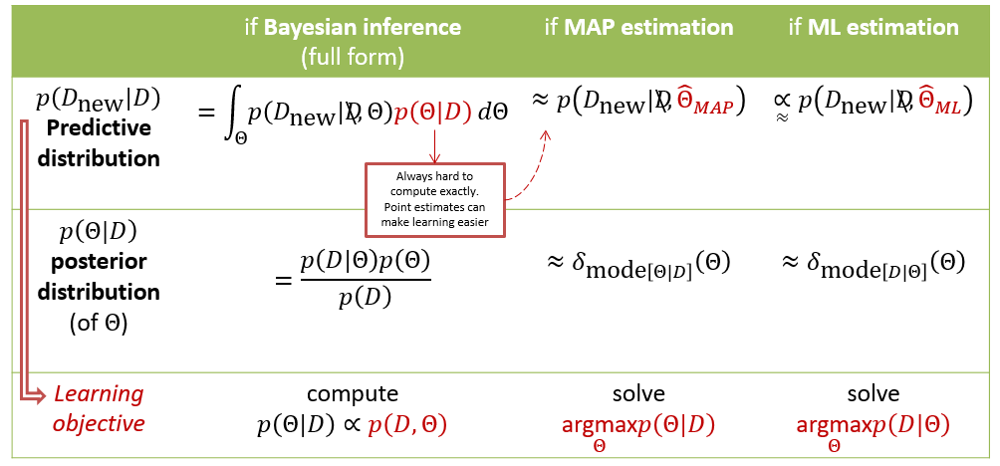

"AI is Now!" Panel
HANOI, MAY 2019 - Vietnam AI Grand Challenge🔗Invited panelist at "AI is Now!" Hanoi - one of the 3 public seminars to kickstart Vietnam AI Grand Challenge 2019. Discussed AI roles, applications, notes to applying AI technologies and related societal issues.
Machine Learning as probabilistic (Bayesian) modelling, in simpler language
HANOI, FEB 2017 - Data Science Lab, HUST🔗A 5-session tutorial with the objective of introducing core concepts of modern Machine learning under probabilistic perspective, with (i) more visualization & interpretation of the accompanied math, and (ii) augmented graphical model notation to incorporate DNN architectures into stochastic structure of Probabilistic models. Upon completing this course, the learners can, hopefully, explore the spectrum of ML/AI research with minimal guidance, keep their heads up on the big picture to not get lost in the complexity of the field, later learn advanced materials more efficiently.
Introduction to Data Analytics
HANOI, JUL 2016 - CareerMe Workshop
Elements of Data Analytics, technical aspects, and presence in daily-life. Joint-talk with (now) Dr. Linh Nghiem
Data Analytics, Data Science, and Big Data have been the trending words that appear frequently even on mainstream media. However, the terms address a wide spectrum of disciplines and often used arbitrarily, thus may confuse aspiring students or early starters. It may be surprising that the the first 2 actually overlap a lot, and share similar foundation that might have been very familiar to many people already (spoiler: statistics). The objective of this talk is to de-mystify these terms, presenting the fundamentals of Data analytics, discuss career prospect and share relevant experiences from the speakers.
Overview of Machine Learning applications in Bioinformatics
HANOI, JUL 2015 - DATA SCIENCE LAB, HUST🔗
Where Machine learning can help make sense of -omic data; An example of applying Bayesian network structured inference to learn a cellular pathway; Challenges for data-driven modelling for molecular biology problems. [Slides]